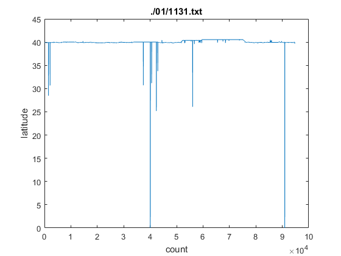

task1
produce the first graphs (distribution of distances and sampling time interval).
Contents
initiazations
dir_name = './01'; file_list = ls(dir_name); file_list(1,:)=[]; % removing . file_list(1,:)=[]; % removing .. % initiazations time_interval_bin_ranges = 0:0.5:12; % minutes time_interval_bin_total = zeros(size(time_interval_bin_ranges,2),1); distance_interval_bin_ranges = 0:500:8000; % meters distance_interval_bin_total = zeros(size(distance_interval_bin_ranges,2),1); % main loop for i = 1:size(file_list,1)
file_name = strcat(dir_name, '/', file_list(i,:));
[date_time,longitude,latitude] = importfile(file_name, 1);
seems like the data is dirty
if (i == 1) plot(latitude); title(file_name); xlabel('count'); ylabel('latitude'); end
clean data
cleaned using a large rectangle, determined manually from gmaps:
longitude_range = [114, 118]; % min max
latitude_range = [38, 42]; % min max
excluding all points that are not inside this rectangle
[date_time,longitude,latitude] = clean_data(date_time,longitude,latitude);
if (i == 1)
plot(latitude);
title(file_name);
xlabel('count');
ylabel('latitude');
end
% display(file_name);
% display(datestr(date_time));
% display(longitude);
% display(latitude);
% display('---------------');
counting time intervals bins
time_intervals = diff(date_time)/60; % minutes
[time_interval_bin] = histc(time_intervals,time_interval_bin_ranges);
time_interval_bin_total = time_interval_bin_total + time_interval_bin;
counting distance intervals bins
% reset distance_intervals = zeros(size(latitude,1)-1,1); for ii = 1:size(distance_intervals,1) distance_intervals(ii) = lldistkm([latitude(ii), longitude(ii)],[latitude(ii+1), longitude(ii+1)]) * 1e3; % meters end % sometimes distance travelled between pts are 0, parking/ traffic lights % distance_intervals(distance_intervals==0) = []; [distance_interval_bin] = histc(distance_intervals,distance_interval_bin_ranges); distance_interval_bin_total = distance_interval_bin_total + distance_interval_bin;
end
plotting time intervals bins
this is the aggregate of all data sets in the folder
we see very little using the same axis as the paper
figure; bar(time_interval_bin_ranges, time_interval_bin_total/sum(time_interval_bin_total), 'histc'); title('time interval'); xlabel('minutes'); ylabel('proportion'); axis([0,12,0,1]);
plotting distance intervals bins
this is the aggregate of all data sets in the folder
we see very little using the same axis as the paper
figure; bar(distance_interval_bin_ranges, distance_interval_bin_total/sum(distance_interval_bin_total), 'histc'); title('distance interval'); xlabel('meters'); ylabel('proportion'); axis([0,8000,0,1]);
zoomed in figures
Above figures are with same axis as in the paper for ease of comparison however, for our sub set of data, it is better to plot the distribution with different limits:
plotting time intervals bins, zoomed
the peak at x=0.08: we see that the dominant time interval is x=0.08 minutes (5 secs), which must be the default setting for the GPS devise
the peak at x=0: by looking through the raw data we see that there are 1 sec time intervals, which are OK. However there are also 0 sec time intervals, this is unexpected from the GPS devise. These are not separated in the current figure.
longer time intervals probably indicate that the GPS device couldn't find signal to record(?) hence skipping the 5s interval
openfig('time_interval_zoomed_in.fig');
plotting distance intervals bins, zoomed
the peak at x=0: there are many data points that has 0 distance travelled, due to waiting/parking/traffic lights. otherwise it looks like a exponentially decaying distribution (R^2 = 0.9938)
openfig('distance_interval_zoomed_in.fig'); figure('Position', [100, 100, 1200, 700]); image(imread('distance_interval_zoomed_in_fitted.png'));
additional notes
Compared to the paper, the peak at 5.5minutes is not observed, due to different data source, since we are using a sub set. The shape of both distributions are different compared to the paper, probably due to the same reasons - different data source